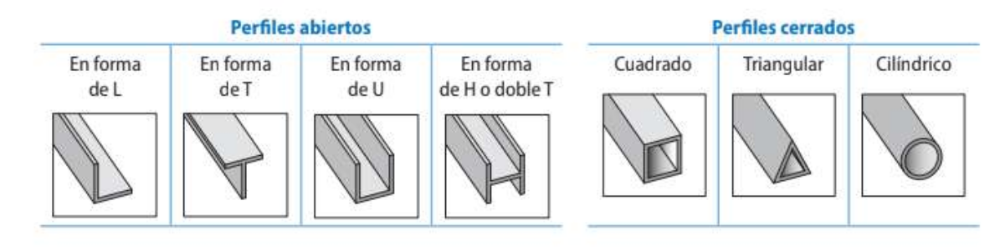

Unidad 2 - Estructuras¶
1. Estructuras. Elementos de estructuras sencillas¶
Una estructura artificial es el conjunto de partes de una construcción compuestas por elementos resistentes unidos entre sí por sus extremos, con la finalidad de soportar, sin romperse, las cargas y los efectos de los agentes exteriores a que se encuentran sometidos.
1.1 Tipos de elementos estructurales¶
Los elementos estructurales se clasifican según su posición y el esfuerzo que soportan:
- Lineales: vigas, pilares, arcos, tirantes.
- Superficiales: muros, forjados.
Los elementos están formados por perfiles, que son las formas comerciales en que se suministran los aceros y otros materiales.

[IMAGEN: Perfiles estructurales abiertos y cerrados]
1.2 Esfuerzos internos¶
Los esfuerzos son las tensiones internas a las que se somete un cuerpo cuando actúan sobre él varias fuerzas externas. Los tipos principales son:
| Esfuerzo | Descripción | Elemento típico |
|---|---|---|
| Axil de compresión | Fuerzas opuestas que acortan el elemento | Pilar, arco |
| Axil de tracción | Fuerzas opuestas que estiran el elemento | Tirante |
| Flector | Fuerzas transversales que curvan el elemento | Viga |
| Torsor | Par de fuerzas que giran el elemento | Eje de transmisión |
| Cortante | Fuerzas paralelas que tienden a cortar la sección | Viga |
[IMAGEN: Tipos de esfuerzos internos]
1.3 Elementos estructurales en la edificación¶
Viga
- Función: resistir cargas perpendiculares a su eje.
- Trabaja principalmente a flexión.
- Esfuerzos: cortante y momento flector.
- Materiales: hormigón, acero o madera.
Pilar
- Función: mantener elevada la estructura.
- Trabaja principalmente a compresión.
- Esfuerzos: axil y momento flector.
Pórtico
- Sistema formado por la unión de vigas y pilares.
- Las vigas se apoyan sobre los pilares y transmiten la carga.
Arco
- Función: soportar cargas verticales.
- Trabaja a compresión gracias a su forma.
- Materiales: hormigón, acero, madera o piedra.
Tirante
- Función: unir dos elementos o unir la estructura al terreno.
- Trabaja siempre a tracción.
Celosías y cerchas
- Armazón que lleva el peso de forma uniforme a vigas, muros o cimientos.
- Trabaja a compresión y tracción, impidiendo la flexión.
- Tipos de cercha: triangular, de pendolón, española, belga, inglesa.
[IMAGEN: Elementos estructurales en la edificación]
[IMAGEN: Tipos de cerchas]
Cimientos
- Función: repartir el peso de la estructura y transmitir las cargas al suelo.
- Trabajan a compresión.
- Material: hormigón armado.
1.4 Elementos estructurales en la maquinaria¶
- Chasis y bastidor: armazón metálico de soporte de un vehículo. Debe tener resistencia a la fatiga, rigidez y ligereza.
- Bancada: estructura de una máquina herramienta sobre la que se construye ésta. Soporta temblores, mantiene la precisión y aloja los mecanismos.
2. Estabilidad y cálculos básicos de las estructuras¶
La finalidad de las estructuras es la resistencia: deben conseguir que las construcciones se sostengan y perduren en el tiempo. Los cálculos estructurales se simplifican en dos tipos:
- Cálculo de la dimensión de la estructura.
- Cálculos de estabilidad (que no se superen los esfuerzos admisibles).
Las fases del cálculo son: Estudio previo → Modelo idealizado → Cálculos → Análisis → Proyecto final.
2.1 Representación vectorial de fuerzas¶
Las fuerzas son magnitudes vectoriales. Para una fuerza F que forma un ángulo α con el eje X:
El módulo de la fuerza resultante:
El ángulo que forma con el eje X:
[IMAGEN: Descomposición vectorial de una fuerza]
2.2 Fuerza resultante¶
Cuando dos o más fuerzas son concurrentes (actúan sobre un mismo punto), se pueden sustituir por una sola fuerza resultante:
Se descompone cada fuerza en sus componentes y se suman:
2.3 Momento de una fuerza¶
El momento de una fuerza respecto a un punto es el producto vectorial entre la fuerza y la distancia al eje de giro:
Cuando F y d son perpendiculares:
Convenio de signos: momento positivo → sentido horario; momento negativo → sentido antihorario.
2.4 Condiciones de equilibrio en un sólido¶
Para que un sólido esté en equilibrio, la resultante general y el momento resultante deben ser nulos:
Descomponiendo en ejes, se obtienen seis ecuaciones (tres de traslación y tres de rotación). En estructuras planas (2D) se reducen a tres:
2.5 Centro de gravedad¶
El centro de gravedad de un cuerpo es el punto de aplicación del peso de dicho cuerpo.
- En un cuerpo homogéneo, el centro de gravedad es su centro de simetría.
- En un cuerpo compuesto por partes más sencillas:
Para cuerpos homogéneos con huecos, la masa del hueco se considera negativa.
[IMAGEN: Centro de gravedad de cuerpo con hueco]
3. Tipos de cargas. Tipos de apoyos y uniones¶
Las fuerzas que actúan sobre una estructura se llaman cargas estructurales. Pueden ser: - Fijas: el propio peso de la estructura. - Variables: el viento, la nieve, las personas, etc.
3.1 Tipos de cargas¶
| Tipo | Descripción |
|---|---|
| Carga puntual | Se aplica en un único punto |
| Carga uniformemente repartida (q) | Distribuida uniformemente a lo largo de la viga (kN/m) |
[IMAGEN: Tipos de cargas sobre vigas]
3.2 Tipos de apoyos¶
Los apoyos restringen los grados de libertad de movimiento de una estructura. Al restringir un movimiento aparecen fuerzas y momentos de reacción.
| Apoyo | Reacciones | Rotación |
|---|---|---|
| Articulado | R_y (solo vertical) | Permitida |
| Fijo | R_x y R_y (vertical y horizontal) | Permitida |
| Empotramiento | R_x, R_y y M_z | Impedida |
[IMAGEN: Tipos de apoyos — articulado, fijo y empotramiento]
4. Cálculo de esfuerzos en vigas. Diagramas de esfuerzos¶
Para que una viga esté en equilibrio debe cumplirse:
4.1 Procedimiento general¶
- Identificar cargas y apoyos.
- Calcular las reacciones en los apoyos con las ecuaciones de equilibrio.
- Obtener las expresiones de momento flector M(x) y esfuerzo cortante F(x) a lo largo de la viga.
- Representar los diagramas.
4.2 Diagrama de esfuerzos cortantes¶
- Se traza una línea de referencia horizontal.
- Se representan las fuerzas y reacciones en cada punto.
- El esfuerzo cortante es la derivada del momento flector:
[IMAGEN: Diagrama de esfuerzos cortantes — ejemplo]
4.3 Diagrama de momentos flectores (método de las áreas)¶
- Calcular las áreas de las figuras del diagrama de esfuerzos cortantes (positivas si están por encima de la línea de referencia, negativas si están por debajo).
- El momento es nulo en el punto de aplicación escogido (extremo libre o apoyo articulado).
- Marcar el valor del área acumulada en cada punto con fuerza o reacción.
- Unir los puntos: las líneas rectas del diagrama cortante se convierten en inclinadas en el diagrama de momentos.
[IMAGEN: Diagrama de momentos flectores — ejemplo]
Resumen de formas de los diagramas: - Carga puntual → esfuerzo cortante rectangular, momento flector triangular. - Carga repartida → esfuerzo cortante lineal (trapezoidal), momento flector parabólico. - Empotramiento → el máximo siempre aparece en el empotramiento.
5. Cálculo de esfuerzos en estructuras de barras articuladas. Diagrama de Cremona¶
Las estructuras de barras articuladas se usan en grúas, torres, puentes, cerchas, etc. Se supone que: - Las cargas se soportan en los nudos, no en las barras. - Las juntas son pasadores que permiten el giro libre. - Cada barra solo trabaja a tracción o compresión axial.
5.1 Isostaticidad¶
Para que una estructura articulada sea isostática debe cumplirse:
siendo b el número de barras y n el número de nudos.
| Condición | Estado |
|---|---|
| b < 2n − 3 | Inestable |
| b = 2n − 3 | Isostática ✓ |
| b > 2n − 3 | Hiperestática |
[IMAGEN: Clasificación de estructuras articuladas — isostática e hiperestática]
5.2 Método de los nudos¶
Se analiza cada nudo aisladamente. Pasos:
- Calcular las reacciones en los apoyos con las ecuaciones de equilibrio global.
- Para cada nudo, plantear ΣFx = 0 y ΣFy = 0.
- La fuerza que ejerce el nudo sobre la barra es igual y de sentido contrario a la que ejerce la barra sobre el nudo.
- Si el resultado es positivo → tracción; si es negativo → compresión.
[IMAGEN: Método de los nudos — diagrama de cuerpo libre]
5.3 Método de las secciones (o de Ritter)¶
Se usa cuando solo se quiere analizar una barra concreta. Pasos:
- Cortar la estructura por una sección que intersecte tres barras.
- Eliminar una de las dos partes resultantes.
- Aplicar las tres ecuaciones de equilibrio a la parte restante.
5.4 Método gráfico de Cremona¶
Procedimiento gráfico basado en el método de los nudos. Pasos:
- Dibujar la estructura a escala con cargas y reacciones.
- Numerar las barras y asignar una letra a cada nudo.
- Dibujar el polígono de fuerzas exteriores.
- Recorrer los nudos en sentido horario donde concurran solo dos incógnitas.
- Las fuerzas que se acercan al nudo → compresión; las que se alejan → tracción.
- Medir las tensiones en el polígono de Cremona.
[IMAGEN: Método gráfico de Cremona]
📋 Formulario¶
| Magnitud | Fórmula |
|---|---|
| Componentes de una fuerza | F_x = F·cos α ; F_y = F·sen α |
| Módulo de la resultante | F = √(F_x² + F_y²) |
| Momento de una fuerza | M = F · d (N·m) |
| Centro de gravedad | X_G = Σ(m_i · X_i) / M |
| Isostática interior | b = 2n − 3 |
| Esfuerzo cortante | F_x = dM/dx |